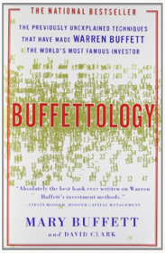
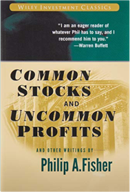
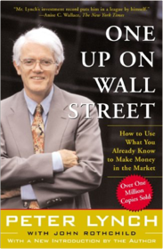

Buffettology: The Previously Unexplained Techniques That Have Made Warren Buffett The Worlds Buffett, Mary, Clark, David068484821XBuilding from the ground up, Buffett chose wisely and picked his stocks with care, in turn amassing the huge fortune for which he is now famous. Mary Buffett, former daughter-in-law of this legendary financial genius and a successful businesswoman in her own right, has teamed up with noted Buffettologist David Clark to create Buffettology, a one-of-a-kind investment guide that explains the winning strategies of the master.-Learn how to approach investing the way Buffett does, based on the authors' firsthand knowledge of the secrets that have made Buffett the world's second wealthiest man -Use Buffett's proven method of investing in stocks that will continue to grow over time  The Secret Byrne, Rhonda1847370292Fragments of a Great Secret have been found in the oral traditions, in literature, in religions and philosophies throughout the centuries. In this book, readers will learn how to use The Secret in every aspect of life - money, health, relationships, happiness, and in every interaction they have in the world.Like the Flowing River P. Coelho000723581XCommon Stocks and Uncommon Profits and Other Writings Fisher, Philip A.0471445509Widely respected and admired, Philip Fisher is among the most influential investors of all time. His investment philosophies, introduced almost forty years ago, are not only studied and applied by today's financiers and investors, but are also regarded by many as gospel. This book is invaluable reading and has been since it was first published in 1958. The updated paperback retains the investment wisdom of the original edition and includes the perspectives of the author's son Ken Fisher, an investment guru in his own right in an expanded preface and introduction"I sought out Phil Fisher after reading his Common Stocks and Uncommon Profits...A thorough understanding of the business, obtained by using Phil's techniques...enables one to make intelligent investment commitments."  One Up On Wall Street: How To Use What You Already Know To Make Money In The Market Lynch, Peter0743200403America’s most successful money manager tells how average investors can beat the pros by using what they know. According to Lynch, investment opportunities are everywhere. From the supermarket to the workplace, we encounter products and services all day long. By paying attention to the best ones, we can find companies in which to invest before the professional analysts discover them. When investors get in early, they can find the “tenbaggers,” the stocks that appreciate tenfold from the initial investment. A few tenbaggers will turn an average stock portfolio into a star performer.Lynch offers easy-to-follow advice for sorting out the long shots from the no-shots by reviewing a company’s financial statements and knowing which numbers really count. He offers guidelines for investing in cyclical, turnaround, and fast-growing companies. As long as you invest for the long term, Lynch says, your portfolio can reward you. This timeless advice has made One Up on Wall Street a #1 bestseller and a classic book of investment know-how.  Love Sonnets of Ghalib Dr. Sarfaraz K. Niazi8171675964First English translation of complete Urdu Ghazals of Asia's most famous poet, Mirza Asadullah Khan Ghalib. Includes Urdu calligraphy, translation, explication, roman transliteration and extensive lexicon and glossary; bibliography. Artistic renditions by Sadequain. |